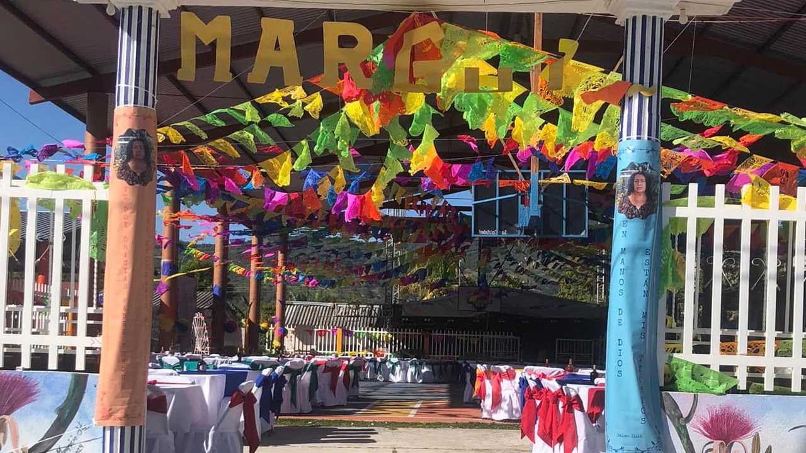
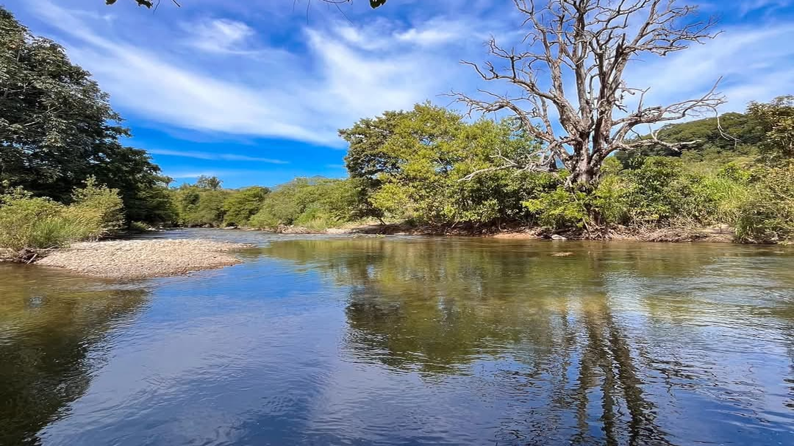
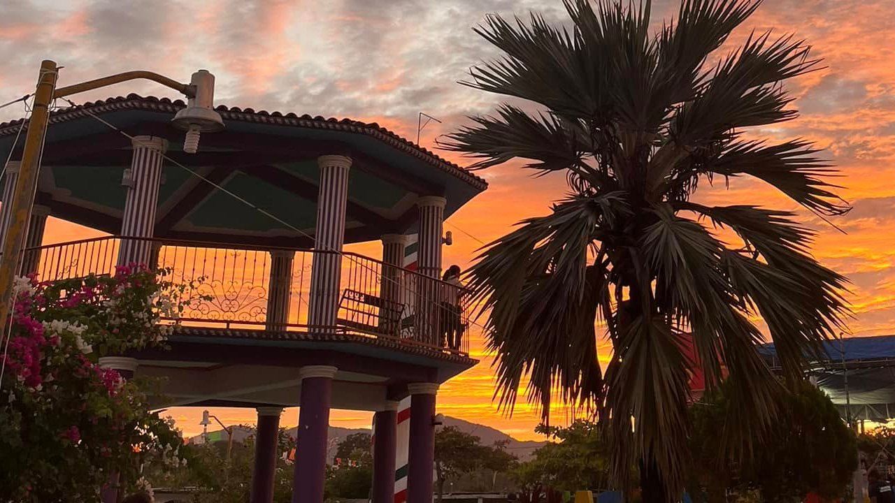

-

SALÓN SOCIAL
¡La cancha de San Cristóbal es el corazón de la comunidad!
¿Quieres divertirte, activarte o simplemente pasar un buen rato con tu gente?
¡Entonces ven a la cancha de San Cristóbal! Es mucho más que un espacio deportivo… ¡es un punto de encuentro, alegría y convivencia! -

IGLESIA CATÓLICA DE SAN CRISTOBAL
Se llevan acabo las piestas patronales y cualquier festejos de la iglesia.
-

RÍOS
¿Buscas un lugar para relajarte, conectarte con la naturaleza y pasar un buen rato en familia o con amigos?
¡Entonces el río de nuestra comunidad es el lugar perfecto para ti!
¡Ven y disfruta del río de San Cristóbal! -

QUIOSCO
¡El quiosco de San Cristóbal te espera!
En el corazón de nuestro hermoso pueblo se encuentra un lugar lleno de encanto, tradición y vida: ¡el quiosco de San Cristóbal!
Es el punto ideal para convivir, descansar y disfrutar de la esencia de nuestra comunidad.